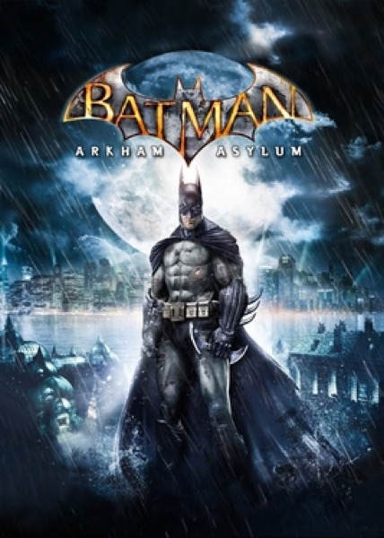

Action · 2009
Batman: Arkham Asylum
Freeflow combat made being the world's best detective feel plausible.

Cover: Wikipedia: Batman: Arkham Asylum
Facts
- Released
- 2009-08-25
- Genre
- Action
- Category
- Action
- Platforms
- PC, PlayStation, Xbox
- Developers
- Rocksteady Studios
- Publishers
- Eidos Interactive
PC requirements
- Minimum
- [object Object]